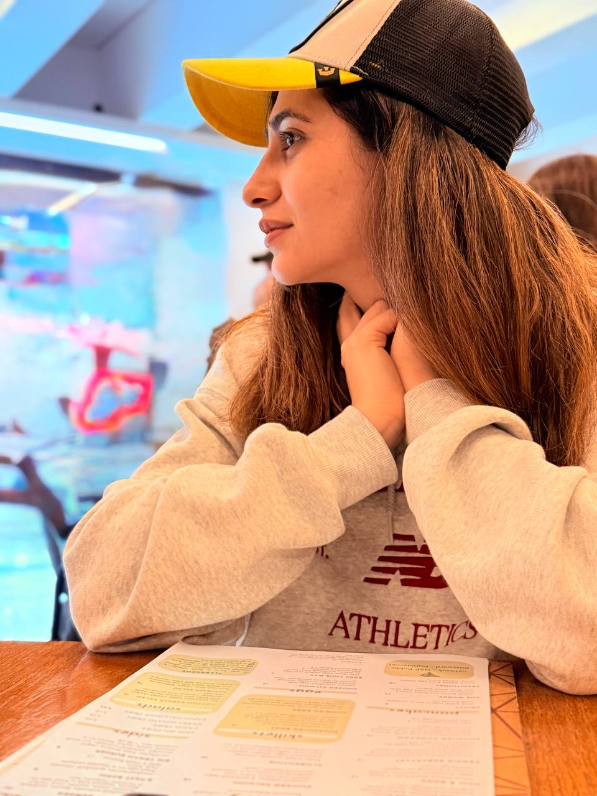

Product Delivery
I take features from concept to shipped workflow, closing the gap between design intent and production behavior.
Software engineer
I work across React, Next.js, TypeScript, Python, APIs, and ML-backed workflows. The goal is simple: make complex systems feel clear, reliable, and ready to ship.
What I do
I care about calm interfaces, dependable data flows, and product decisions grounded in evidence instead of guesswork.
I take features from concept to shipped workflow, closing the gap between design intent and production behavior.
I build React and Next.js interfaces that hold up under growth, reuse, and hard product constraints.
I design contracts, data handling, and integrations so the UI can stay stable even when systems get messy.
I work with model outputs, dashboards, and analysis pipelines to turn raw signals into practical decisions.

About me
I enjoy building the layers between interface, API, and analysis so teams can move faster without losing quality. My strongest tools are React, Next.js, TypeScript, Python, and data-oriented product thinking.
Most of my work sits at the point where product detail matters: validation flows, metrics dashboards, API reliability, test coverage, and UI decisions that make dense information easier to use.
Read moreRecent work
A mix of product engineering, test strategy, analytics tooling, and ML-backed work.